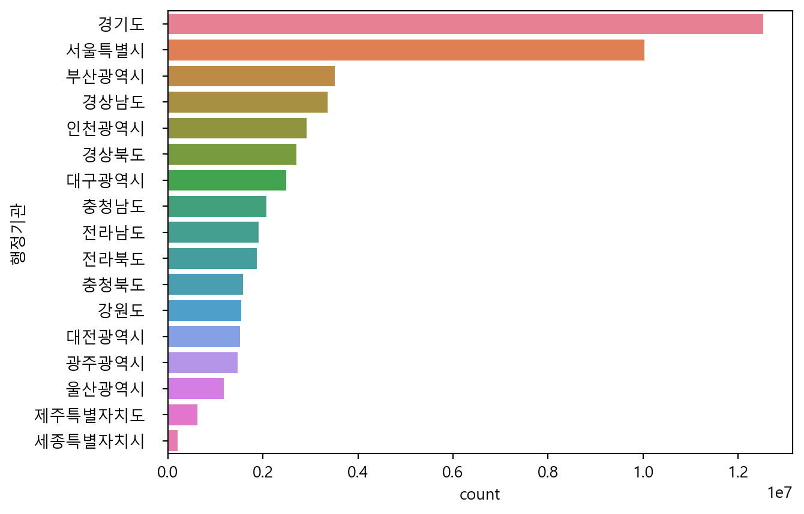

import pandas as pd
import numpy as np전통시장 점포 규모와 인구비율에 관한 분석
분석 목적
전통시장 홍보 목적 가설 : 만약 인구가 많아도 점포수가 적으면 홍보 필요성이 생긴다. 여행 루트에 전통시장을 추가?
2024년 4월에 보도된 세계타임즈에서 KB국민카드의 전통시장 카드 소비 데이터 분석을 볼 수 있습니다. 전통시장의 연령별 매출 비중에서 40%는 60대 이상에서 발생되었습니다. 50대 26%, 40대 17%, 30대 10%, 20대 7%로 연령대가 높을수록 매출 비중이 높게 나타났습니다.
시장은 인구가 많은 곳에 분포되어 있는데, 전통시장 또한 단순히 인구가 많은 곳이 점포수가 많은지? 주 고객층인 60대 이상이 많은 지역에 점포수가 많은지? 알고 싶었다.
2015년 기준으로 60대 이상 비율이 높은 행정구역에 점포수가 많이 분포되어 있는지 분석하기. 이를 바탕으로 60대 비율이 적고, 인구가 많은 곳에 점포수가 많은지? 60대 이상 비율이 높고, 인구가 적은 구역에 점포수가 많은지 비교하기. 어느특징에 따라 전통시장이 많이 위치한지 분석해보았습니다.
나이 나누기
0~19세 = age_under_20
20~59세 = age_2050
60~100세 이상 = age_over_60
한국은 공공기관 및 일부 기업이 60세로 정년으로 두고 있기 때문에 위와 같이 노년의 기준을 60세 이상으로 정했습니다.
(미국과 유럽은 60~65세 사이를 정년으로 두고 있습니다.)
점포수 크기에 따른 연령층 확인하기
2015년 12월 기준 인구조사 파일 불러오기
pop = pd.read_excel('data/pop_2015.xlsx')원본 숫자 안에 , 를 없애기 (문자열을 숫자열로 바꾸기)
원본 데이터의 values를 보면 천 단위로 , 가 있다. 때문에 문자열로 인식되어서 이를 지우고 숫자열로 바꾼다.
subset = pop.iloc[1:18,1:14]
for col in subset.columns:
subset[col] = subset[col].str.replace(',', '').astype(int)
subset| 총 인구수 | 연령구간인구수 | 0~9세 | 10~19세 | 20~29세 | 30~39세 | 40~49세 | 50~59세 | 60~69세 | 70~79세 | 80~89세 | 90~99세 | 100세 이상 | |
|---|---|---|---|---|---|---|---|---|---|---|---|---|---|
| 1 | 10022181 | 10022181 | 783299 | 985790 | 1447221 | 1668253 | 1701609 | 1588333 | 1037752 | 582367 | 192801 | 29719 | 5037 |
| 2 | 3513777 | 3513777 | 267227 | 345503 | 456514 | 493958 | 568218 | 619703 | 432899 | 239641 | 79128 | 9497 | 1489 |
| 3 | 2487829 | 2487829 | 208115 | 289590 | 326755 | 342633 | 438674 | 419653 | 253693 | 148884 | 53282 | 6007 | 543 |
| 4 | 2925815 | 2925815 | 271758 | 324530 | 402113 | 455898 | 516105 | 494119 | 255834 | 142147 | 54650 | 7960 | 701 |
| 5 | 1472199 | 1472199 | 143700 | 197005 | 198686 | 221036 | 258049 | 217366 | 127348 | 76489 | 28346 | 3860 | 314 |
| 6 | 1518775 | 1518775 | 145049 | 184964 | 210749 | 228720 | 267008 | 238664 | 134281 | 76136 | 29005 | 3918 | 281 |
| 7 | 1173534 | 1173534 | 116241 | 139958 | 158615 | 180833 | 211988 | 201390 | 100468 | 45817 | 16011 | 2074 | 139 |
| 8 | 210884 | 210884 | 29825 | 23398 | 23043 | 40025 | 37370 | 25872 | 15614 | 10351 | 4718 | 634 | 34 |
| 9 | 12522606 | 12522606 | 1251234 | 1479739 | 1644870 | 1969170 | 2302937 | 1962003 | 1027712 | 616198 | 232931 | 32804 | 3008 |
| 10 | 1549507 | 1549507 | 123275 | 171073 | 184802 | 189754 | 250407 | 269286 | 171452 | 131730 | 49542 | 7578 | 608 |
| 11 | 1583952 | 1583952 | 142319 | 179628 | 196456 | 216258 | 262133 | 260270 | 158194 | 114586 | 47691 | 5977 | 440 |
| 12 | 2077649 | 2077649 | 197236 | 229214 | 244233 | 296909 | 333108 | 318857 | 212781 | 160439 | 74759 | 9433 | 680 |
| 13 | 1869711 | 1869711 | 159824 | 217813 | 218698 | 232517 | 299535 | 295583 | 210933 | 155007 | 70437 | 8725 | 639 |
| 14 | 1908996 | 1908996 | 158142 | 209957 | 206551 | 224820 | 291730 | 308904 | 224235 | 190822 | 82190 | 10892 | 753 |
| 15 | 2702826 | 2702826 | 223394 | 277327 | 311383 | 347557 | 428513 | 456781 | 314821 | 229763 | 99895 | 12658 | 734 |
| 16 | 3364702 | 3364702 | 317867 | 384287 | 394794 | 476814 | 580967 | 551878 | 337382 | 216802 | 92498 | 10817 | 596 |
| 17 | 624395 | 624395 | 63183 | 77313 | 73565 | 85811 | 110642 | 96129 | 57880 | 39258 | 17326 | 3075 | 213 |
pop.iloc[1:18,1:14] = subset
pop = pop.iloc[0:18,0:14]
pop| 행정기관 | 총 인구수 | 연령구간인구수 | 0~9세 | 10~19세 | 20~29세 | 30~39세 | 40~49세 | 50~59세 | 60~69세 | 70~79세 | 80~89세 | 90~99세 | 100세 이상 | |
|---|---|---|---|---|---|---|---|---|---|---|---|---|---|---|
| 0 | 전국 | 51,529,338 | 51,529,338 | 4,601,688 | 5,717,089 | 6,699,048 | 7,670,966 | 8,858,993 | 8,324,791 | 5,073,279 | 3,176,437 | 1,225,210 | 165,628 | 16,209 |
| 1 | 서울특별시 | 10022181 | 10022181 | 783299 | 985790 | 1447221 | 1668253 | 1701609 | 1588333 | 1037752 | 582367 | 192801 | 29719 | 5037 |
| 2 | 부산광역시 | 3513777 | 3513777 | 267227 | 345503 | 456514 | 493958 | 568218 | 619703 | 432899 | 239641 | 79128 | 9497 | 1489 |
| 3 | 대구광역시 | 2487829 | 2487829 | 208115 | 289590 | 326755 | 342633 | 438674 | 419653 | 253693 | 148884 | 53282 | 6007 | 543 |
| 4 | 인천광역시 | 2925815 | 2925815 | 271758 | 324530 | 402113 | 455898 | 516105 | 494119 | 255834 | 142147 | 54650 | 7960 | 701 |
| 5 | 광주광역시 | 1472199 | 1472199 | 143700 | 197005 | 198686 | 221036 | 258049 | 217366 | 127348 | 76489 | 28346 | 3860 | 314 |
| 6 | 대전광역시 | 1518775 | 1518775 | 145049 | 184964 | 210749 | 228720 | 267008 | 238664 | 134281 | 76136 | 29005 | 3918 | 281 |
| 7 | 울산광역시 | 1173534 | 1173534 | 116241 | 139958 | 158615 | 180833 | 211988 | 201390 | 100468 | 45817 | 16011 | 2074 | 139 |
| 8 | 세종특별자치시 | 210884 | 210884 | 29825 | 23398 | 23043 | 40025 | 37370 | 25872 | 15614 | 10351 | 4718 | 634 | 34 |
| 9 | 경기도 | 12522606 | 12522606 | 1251234 | 1479739 | 1644870 | 1969170 | 2302937 | 1962003 | 1027712 | 616198 | 232931 | 32804 | 3008 |
| 10 | 강원도 | 1549507 | 1549507 | 123275 | 171073 | 184802 | 189754 | 250407 | 269286 | 171452 | 131730 | 49542 | 7578 | 608 |
| 11 | 충청북도 | 1583952 | 1583952 | 142319 | 179628 | 196456 | 216258 | 262133 | 260270 | 158194 | 114586 | 47691 | 5977 | 440 |
| 12 | 충청남도 | 2077649 | 2077649 | 197236 | 229214 | 244233 | 296909 | 333108 | 318857 | 212781 | 160439 | 74759 | 9433 | 680 |
| 13 | 전라북도 | 1869711 | 1869711 | 159824 | 217813 | 218698 | 232517 | 299535 | 295583 | 210933 | 155007 | 70437 | 8725 | 639 |
| 14 | 전라남도 | 1908996 | 1908996 | 158142 | 209957 | 206551 | 224820 | 291730 | 308904 | 224235 | 190822 | 82190 | 10892 | 753 |
| 15 | 경상북도 | 2702826 | 2702826 | 223394 | 277327 | 311383 | 347557 | 428513 | 456781 | 314821 | 229763 | 99895 | 12658 | 734 |
| 16 | 경상남도 | 3364702 | 3364702 | 317867 | 384287 | 394794 | 476814 | 580967 | 551878 | 337382 | 216802 | 92498 | 10817 | 596 |
| 17 | 제주특별자치도 | 624395 | 624395 | 63183 | 77313 | 73565 | 85811 | 110642 | 96129 | 57880 | 39258 | 17326 | 3075 | 213 |
전국을 제외한 총 인구 그래프화
data_pop = pop.drop(0).groupby('행정기관') \
.agg(count = ('총 인구수','min'))
data_pop = data_pop.sort_values('count',ascending = False)
data_pop| count | |
|---|---|
| 행정기관 | |
| 경기도 | 12522606 |
| 서울특별시 | 10022181 |
| 부산광역시 | 3513777 |
| 경상남도 | 3364702 |
| 인천광역시 | 2925815 |
| 경상북도 | 2702826 |
| 대구광역시 | 2487829 |
| 충청남도 | 2077649 |
| 전라남도 | 1908996 |
| 전라북도 | 1869711 |
| 충청북도 | 1583952 |
| 강원도 | 1549507 |
| 대전광역시 | 1518775 |
| 광주광역시 | 1472199 |
| 울산광역시 | 1173534 |
| 제주특별자치도 | 624395 |
| 세종특별자치시 | 210884 |
import seaborn as sns
import matplotlib.pyplot as plt
plt.rcParams.update({'font.family' : 'Malgun Gothic'})
plt.clf()
sns.barplot(data = data_pop, y = '행정기관', x = 'count', hue = '행정기관')
plt.show()
경기도와 서울은 수도권 특성상 면적대비 많은 인구가 몰려있다. 그렇기에 전통시장의 갯수도 많을 수 밖에 없는 조건이므로 나중 분석에서 제외할 예정이다.
각 지역마다 연령층 비율 계산하기
pop_서울, pop_부산, pop_대구, pop_인천, pop_광주, pop_대전, pop_울산, pop_세종, \
pop_경기, pop_강원, pop_충북, pop_충남, pop_전북, pop_전남, pop_경북, pop_경남, pop_제주 = [
pop['총 인구수'][i] for i in range(1, 18)]
서울_유소년_비율 = (pop.iloc[1,3:5].sum()) / pop_서울* 100
부산_유소년_비율 = (pop.iloc[2,3:5].sum()) / pop_부산* 100
대구_유소년_비율 = (pop.iloc[3,3:5].sum()) / pop_대구* 100
인천_유소년_비율 = (pop.iloc[4,3:5].sum()) / pop_인천* 100
광주_유소년_비율 = (pop.iloc[5,3:5].sum()) / pop_광주* 100
대전_유소년_비율 = (pop.iloc[6,3:5].sum()) / pop_대전* 100
울산_유소년_비율 = (pop.iloc[7,3:5].sum()) / pop_울산* 100
세종_유소년_비율 = (pop.iloc[8,3:5].sum()) / pop_세종* 100
경기_유소년_비율 = (pop.iloc[9,3:5].sum()) / pop_경기* 100
강원_유소년_비율 = (pop.iloc[10,3:5].sum()) / pop_강원* 100
충북_유소년_비율 = (pop.iloc[11,3:5].sum()) / pop_충북* 100
충남_유소년_비율 = (pop.iloc[12,3:5].sum()) / pop_충남* 100
전북_유소년_비율 = (pop.iloc[13,3:5].sum()) / pop_전북* 100
전남_유소년_비율 = (pop.iloc[14,3:5].sum()) / pop_전남* 100
경북_유소년_비율 = (pop.iloc[15,3:5].sum()) / pop_경북* 100
경남_유소년_비율 = (pop.iloc[16,3:5].sum()) / pop_경남* 100
제주_유소년_비율 = (pop.iloc[17,3:5].sum()) / pop_제주* 100
서울_성인_비율 = (pop.iloc[1,5:9].sum()) / pop_서울 * 100
부산_성인_비율 = (pop.iloc[2,5:9].sum()) / pop_부산* 100
대구_성인_비율 = (pop.iloc[3,5:9].sum()) / pop_대구* 100
인천_성인_비율 = (pop.iloc[4,5:9].sum()) / pop_인천* 100
광주_성인_비율 = (pop.iloc[5,5:9].sum()) / pop_광주* 100
대전_성인_비율 = (pop.iloc[6,5:9].sum()) / pop_대전* 100
울산_성인_비율 = (pop.iloc[7,5:9].sum()) / pop_울산* 100
세종_성인_비율 = (pop.iloc[8,5:9].sum()) / pop_세종* 100
경기_성인_비율 = (pop.iloc[9,5:9].sum()) / pop_경기* 100
강원_성인_비율 = (pop.iloc[10,5:9].sum()) / pop_강원* 100
충북_성인_비율 = (pop.iloc[11,5:9].sum()) / pop_충북* 100
충남_성인_비율 = (pop.iloc[12,5:9].sum()) / pop_충남* 100
전북_성인_비율 = (pop.iloc[13,5:9].sum()) / pop_전북* 100
전남_성인_비율 = (pop.iloc[14,5:9].sum()) / pop_전남* 100
경북_성인_비율 = (pop.iloc[15,5:9].sum()) / pop_경북* 100
경남_성인_비율 = (pop.iloc[16,5:9].sum()) / pop_경남* 100
제주_성인_비율 = (pop.iloc[17,5:9].sum()) / pop_제주* 100
서울_노인_비율 = (pop.iloc[1,9:14].sum()) / pop_서울 * 100
부산_노인_비율 = (pop.iloc[2,9:14].sum()) / pop_부산* 100
대구_노인_비율 = (pop.iloc[3,9:14].sum()) / pop_대구* 100
인천_노인_비율 = (pop.iloc[4,9:14].sum()) / pop_인천* 100
광주_노인_비율 = (pop.iloc[5,9:14].sum()) / pop_광주* 100
대전_노인_비율 = (pop.iloc[6,9:14].sum()) / pop_대전* 100
울산_노인_비율 = (pop.iloc[7,9:14].sum()) / pop_울산* 100
세종_노인_비율 = (pop.iloc[8,9:14].sum()) / pop_세종* 100
경기_노인_비율 = (pop.iloc[9,9:14].sum()) / pop_경기* 100
강원_노인_비율 = (pop.iloc[10,9:14].sum()) / pop_강원* 100
충북_노인_비율 = (pop.iloc[11,9:14].sum()) / pop_충북* 100
충남_노인_비율 = (pop.iloc[12,9:14].sum()) / pop_충남* 100
전북_노인_비율 = (pop.iloc[13,9:14].sum()) / pop_전북* 100
전남_노인_비율 = (pop.iloc[14,9:14].sum()) / pop_전남* 100
경북_노인_비율 = (pop.iloc[15,9:14].sum()) / pop_경북* 100
경남_노인_비율 = (pop.iloc[16,9:14].sum()) / pop_경남* 100
제주_노인_비율 = (pop.iloc[17,9:14].sum()) / pop_제주* 100인구 비율 DataFrame 만들기
pop_ratio = pd.DataFrame({
'서울' : [서울_유소년_비율, 서울_성인_비율, 서울_노인_비율],
'부산' : [부산_유소년_비율, 부산_성인_비율, 부산_노인_비율],
'대구' : [대구_유소년_비율, 대구_성인_비율, 대구_노인_비율],
'인천' : [인천_유소년_비율, 인천_성인_비율, 인천_노인_비율],
'광주' : [광주_유소년_비율, 광주_성인_비율, 광주_노인_비율],
'대전' : [대전_유소년_비율, 대전_성인_비율, 대전_노인_비율],
'울산' : [울산_유소년_비율, 울산_성인_비율, 울산_노인_비율],
'세종' : [세종_유소년_비율, 세종_성인_비율, 세종_노인_비율],
'경기도' : [경기_유소년_비율, 경기_성인_비율, 경기_노인_비율],
'강원' : [강원_유소년_비율, 강원_성인_비율, 강원_노인_비율],
'충청북도' : [충북_유소년_비율, 충북_성인_비율, 충북_노인_비율],
'충청남도' : [충남_유소년_비율, 충남_성인_비율, 충남_노인_비율],
'전라북도' : [전북_유소년_비율, 전북_성인_비율, 전북_노인_비율],
'전라남도' : [전남_유소년_비율, 전남_성인_비율, 전남_노인_비율],
'경상북도' : [경북_유소년_비율, 경북_성인_비율, 경북_노인_비율],
'경상남도' : [경남_유소년_비율, 경남_성인_비율, 경남_노인_비율],
'제주도' : [제주_유소년_비율, 제주_성인_비율, 제주_노인_비율]
})
pop_ratio.index = ['age_under_20','age_2050','age_over_60']
pop_ratio = pop_ratio.transpose()# 지역 칼럼 추가하기
pop_ratio['region'] = ['서울특별시', '부산광역시', '대구광역시', '인천광역시', '광주광역시', '대전광역시', '울산광역시', '세종특별시', '경기도', '강원도', '충청북도', '충청남도', '전라북도', '전라남도', '경상북도', '경상남도', '제주도']
pop_ratio
pop_ratio.sort_values('age_over_60', ascending = False)| age_under_20 | age_2050 | age_over_60 | region | |
|---|---|---|---|---|
| 전라남도 | 19.282335 | 54.060092 | 26.657573 | 전라남도 |
| 경상북도 | 18.525832 | 57.134052 | 24.340117 | 경상북도 |
| 전라북도 | 20.197613 | 55.962285 | 23.840101 | 전라북도 |
| 강원 | 18.996236 | 57.711840 | 23.291924 | 강원도 |
| 충청남도 | 20.525604 | 57.425821 | 22.048575 | 충청남도 |
| 부산 | 17.437931 | 60.857391 | 21.704678 | 부산광역시 |
| 충청북도 | 20.325553 | 59.036953 | 20.637494 | 충청북도 |
| 경상남도 | 20.868237 | 59.572973 | 19.558790 | 경상남도 |
| 제주도 | 22.501141 | 58.640284 | 18.858575 | 제주도 |
| 대구 | 20.005595 | 61.407557 | 18.586848 | 대구광역시 |
| 서울 | 17.651737 | 63.912396 | 18.435867 | 서울특별시 |
| 광주 | 23.142591 | 60.802718 | 16.054691 | 광주광역시 |
| 대전 | 21.728893 | 62.230482 | 16.040625 | 대전광역시 |
| 인천 | 20.380236 | 63.853490 | 15.766274 | 인천광역시 |
| 경기도 | 21.808344 | 62.918054 | 15.273602 | 경기도 |
| 세종 | 25.238046 | 59.895488 | 14.866467 | 세종특별시 |
| 울산 | 21.831408 | 64.150336 | 14.018256 | 울산광역시 |
전통시장 데이터 불러오기
# 데이터 불러오기
market = pd.read_excel("data/traditionalmarket.xlsx")
# 분석을 위한 복사본 만들기
market2 = market.copy()# 엑셀의 변수 한글을 영어로 rename
market2 = market2.rename(columns = {"시장명" : "market_name",
"시장유형" : "type",
"소재지도로명주소" : "adress_road",
"시장개설주기" : "open_period",
"소재지지번주소" : "address_old",
"점포수" : "market_count",
"사용가능상품권" : "certificate",
"공중화장실 보유여부" :"public_toilet",
"주차장 보유여부" : "parking_lot",
"개설년도" : "year",
"데이터기준일자" : "data_date"})# 데이터의 정보 확인하기
market2.describe()
market2["public_toilet"].info()
market2["parking_lot"].info()
market2['market_count'].describe()<class 'pandas.core.series.Series'>
RangeIndex: 1439 entries, 0 to 1438
Series name: public_toilet
Non-Null Count Dtype
-------------- -----
1439 non-null object
dtypes: object(1)
memory usage: 11.4+ KB
<class 'pandas.core.series.Series'>
RangeIndex: 1439 entries, 0 to 1438
Series name: parking_lot
Non-Null Count Dtype
-------------- -----
1439 non-null object
dtypes: object(1)
memory usage: 11.4+ KBcount 1439.000000
mean 143.907575
std 298.989963
min 0.000000
25% 50.000000
50% 80.000000
75% 134.000000
max 5852.000000
Name: market_count, dtype: float64# 점포수에 따른 규모 크기를 설명해주는 변수 만들기
market2 = market2.assign(market_scale = np.where(market2["market_count"] >= 134, "large",
np.where(market2["market_count"] >= 50, "medium", "small")))
# 편의시설의 유무에 따른 레벨링 하기
market2['level'] = np.where((market2['public_toilet'] == 'Y') & (market2['parking_lot'] == 'Y'), 'high',
np.where((market2['public_toilet'] == 'N') & (market2['public_toilet'] == 'N') , 'low', 'intermediate'))# 확인 절차
market2.head()| market_name | type | adress_road | open_period | address_old | market_count | certificate | public_toilet | parking_lot | year | data_date | market_scale | level | |
|---|---|---|---|---|---|---|---|---|---|---|---|---|---|
| 0 | 중앙시장 | 상설 | 강원도 강릉시 금성로 21 | 상설 | 강원 강릉시 성남동 50번지 | 229 | 온누리상품권 | Y | Y | 1980.0 | 2015-12-31 | large | high |
| 1 | 강릉동부시장 | 상설 | 강원도 강릉시 옥천로 48 | 상설 | 강원 강릉시 옥천동 223번지 | 91 | NaN | Y | N | 2014.0 | 2015-12-31 | medium | intermediate |
| 2 | 강릉서부시장 | 상설 | 강원도 강릉시 임영로 155번길 6 | 상설 | 강원 강릉시 용강동 29번지 | 109 | 온누리상품권 | Y | Y | 1977.0 | 2015-12-31 | medium | high |
| 3 | 주문진종합시장 | 상설+정기 | 강원도 강릉시 주문진읍 구 시장길 | 5일 | 강원 강릉시 주문진읍 주문리 321-52번지 | 77 | 온누리상품권 | Y | Y | 2006.0 | 2015-12-31 | medium | high |
| 4 | 주문진수산시장 | 상설 | 강원도 강릉시 주문진읍 시장1길 4-1 | 상설 | 강원 강릉시 주문진읍 주문리 312-91번지 | 42 | 온누리상품권 | Y | Y | 2007.0 | 2015-12-31 | small | high |
# 그래프 그리기
import seaborn as sns
import matplotlib.pyplot as plt
# x축을 편의 시설 레벨
plt.clf()
sns.countplot(data = market2, x = 'level', hue = 'level')
plt.show()# 그래프 그리기 위한 df 생성
# 시장 유형와 규모 크기에 따른 그룹화 / 규모 크기 갯수 추가
df = market2.groupby(["type", "market_scale"], as_index = False) \
.agg(market_count = ("market_scale", "count"))
# 규모 크기에 따른 내림차순
df.sort_values('market_count', ascending = False)
# 만든 df를 x축에 시장 유형, y축은 규모 크기에 따른 점포 갯수
plt.clf()
sns.barplot(data = df, y = 'type', x = 'market_count', hue = 'market_scale')
plt.show()plt.clf()<Figure size 672x480 with 0 Axes>인구 데이터와 시장 데이터 합치기
market2['region'] = market2['adress_road'].str.split().str[0]
market_pop = pd.merge(market2, pop_ratio, how = 'left', on = 'region')
market_pop| market_name | type | adress_road | open_period | address_old | market_count | certificate | public_toilet | parking_lot | year | data_date | market_scale | level | region | age_under_20 | age_2050 | age_over_60 | |
|---|---|---|---|---|---|---|---|---|---|---|---|---|---|---|---|---|---|
| 0 | 중앙시장 | 상설 | 강원도 강릉시 금성로 21 | 상설 | 강원 강릉시 성남동 50번지 | 229 | 온누리상품권 | Y | Y | 1980.0 | 2015-12-31 | large | high | 강원도 | 18.996236 | 57.711840 | 23.291924 |
| 1 | 강릉동부시장 | 상설 | 강원도 강릉시 옥천로 48 | 상설 | 강원 강릉시 옥천동 223번지 | 91 | NaN | Y | N | 2014.0 | 2015-12-31 | medium | intermediate | 강원도 | 18.996236 | 57.711840 | 23.291924 |
| 2 | 강릉서부시장 | 상설 | 강원도 강릉시 임영로 155번길 6 | 상설 | 강원 강릉시 용강동 29번지 | 109 | 온누리상품권 | Y | Y | 1977.0 | 2015-12-31 | medium | high | 강원도 | 18.996236 | 57.711840 | 23.291924 |
| 3 | 주문진종합시장 | 상설+정기 | 강원도 강릉시 주문진읍 구 시장길 | 5일 | 강원 강릉시 주문진읍 주문리 321-52번지 | 77 | 온누리상품권 | Y | Y | 2006.0 | 2015-12-31 | medium | high | 강원도 | 18.996236 | 57.711840 | 23.291924 |
| 4 | 주문진수산시장 | 상설 | 강원도 강릉시 주문진읍 시장1길 4-1 | 상설 | 강원 강릉시 주문진읍 주문리 312-91번지 | 42 | 온누리상품권 | Y | Y | 2007.0 | 2015-12-31 | small | high | 강원도 | 18.996236 | 57.711840 | 23.291924 |
| ... | ... | ... | ... | ... | ... | ... | ... | ... | ... | ... | ... | ... | ... | ... | ... | ... | ... |
| 1434 | 엄정내창시장 | 상설+정기 | 충청북도 충주시 엄정면 내창로 191-1 | 5일 | 충북 충주시 엄정면 미내리 159-15 | 98 | 온누리상품권 | N | N | 2013.0 | 2015-12-31 | medium | low | 충청북도 | 20.325553 | 59.036953 | 20.637494 |
| 1435 | 중앙공설시장 | 상설 | 충청북도 충주시 예성로 168 | 상설 | 충북 충주시 성서동 306 | 65 | 온누리상품권 | Y | Y | 2005.0 | 2015-12-31 | medium | high | 충청북도 | 20.325553 | 59.036953 | 20.637494 |
| 1436 | 남부시장 | 상설 | 충청북도 충주시 지곡10길 38-1 | 상설 | 충북 충주시 지현동 1431 | 61 | 온누리상품권 | Y | Y | 2005.0 | 2015-12-31 | medium | high | 충청북도 | 20.325553 | 59.036953 | 20.637494 |
| 1437 | 충주자유시장 | 상설+정기 | 충청북도 충주시 충인6길 16 | 5일 | 충북 충주시 충인동 325 | 274 | 온누리상품권 | Y | Y | 2005.0 | 2015-12-31 | large | high | 충청북도 | 20.325553 | 59.036953 | 20.637494 |
| 1438 | 목행시장 | 상설+정기 | 충청북도 충주시 행정9길 35 | 5일 | 충북 충주시 목행동 676-44 | 92 | 온누리상품권 | Y | Y | 2013.0 | 2015-12-31 | medium | high | 충청북도 | 20.325553 | 59.036953 | 20.637494 |
1439 rows × 17 columns
60대 이상 비율의 계급 나누기
market_pop['age_over_60'].describe()count 1439.000000
mean 20.253145
std 3.405308
min 14.018256
25% 18.435867
50% 19.558790
75% 23.291924
max 26.657573
Name: age_over_60, dtype: float64중앙값 19.55% 보다 높은 지역을 60대 이상 비율이 많다고 정의
시장 종류 갯수
# 노인인구 평균 비교
market_pop['under'] = np.where(market_pop['age_over_60'] < 19.55,1,0)
market_pop['over'] = np.where(market_pop['age_over_60'] >= 19.55,1,0)
market_pop.groupby(['region']) \
.agg(노인인구평균이상 = ('over','sum'), 노인인구평균이하 = ('under','sum'))| 노인인구평균이상 | 노인인구평균이하 | |
|---|---|---|
| region | ||
| 강원도 | 58 | 0 |
| 경기도 | 0 | 130 |
| 경상남도 | 155 | 0 |
| 경상북도 | 149 | 0 |
| 광주광역시 | 0 | 26 |
| 대구광역시 | 0 | 109 |
| 대전광역시 | 0 | 27 |
| 부산광역시 | 169 | 0 |
| 서울특별시 | 0 | 216 |
| 세종특별시 | 0 | 4 |
| 울산광역시 | 0 | 40 |
| 인천광역시 | 0 | 46 |
| 전라남도 | 108 | 0 |
| 전라북도 | 60 | 0 |
| 제주도 | 0 | 25 |
| 충청남도 | 58 | 0 |
| 충청북도 | 59 | 0 |
시장 종류가 몇 개인지 알아보기 위해 지역기준으로 1행에서 노인인구 비율이 높으면 1, 2행에서도 노인인구 비율이 낮으면 1의 값을 주어 모두 더하는 방식으로 계산했다.
market_pop['over'] = np.where(market_pop['age_over_60'] >= 19.55,1,1)
market_pop.groupby(['region']) \
.agg(시장종류갯수 = ('over','sum')) \
.sort_values('시장종류갯수', ascending = False)| 시장종류갯수 | |
|---|---|
| region | |
| 서울특별시 | 216 |
| 부산광역시 | 169 |
| 경상남도 | 155 |
| 경상북도 | 149 |
| 경기도 | 130 |
| 대구광역시 | 109 |
| 전라남도 | 108 |
| 전라북도 | 60 |
| 충청북도 | 59 |
| 충청남도 | 58 |
| 강원도 | 58 |
| 인천광역시 | 46 |
| 울산광역시 | 40 |
| 대전광역시 | 27 |
| 광주광역시 | 26 |
| 제주도 | 25 |
| 세종특별시 | 4 |
시장종류갯수 = market_pop.groupby(['region']) \
.agg(시장종류갯수 = ('over','sum')) \
.sort_values('시장종류갯수',ascending = False)
plt.clf()
sns.barplot(data = 시장종류갯수, y = 'region', x = '시장종류갯수', hue = '시장종류갯수')
plt.show()각 지역의 점포수를 sum 해보기 -over 값을 up down으로 수정하기-
#중앙값보다 높고 낮음을 yes | no로 표시하기
market_pop['over'] = np.where(market_pop['age_over_60'] >= 19.55,'Y','N')
over_점포수 = market_pop.groupby(['region','over']) \
.agg(count = ('market_count','sum')) \
.sort_values('count', ascending = False)
over_점포수| count | ||
|---|---|---|
| region | over | |
| 서울특별시 | N | 50146 |
| 부산광역시 | Y | 29094 |
| 경기도 | N | 18977 |
| 경상남도 | Y | 18156 |
| 경상북도 | Y | 16582 |
| 대구광역시 | N | 14290 |
| 인천광역시 | N | 10555 |
| 충청남도 | Y | 7657 |
| 전라남도 | Y | 7248 |
| 충청북도 | Y | 7156 |
| 강원도 | Y | 6811 |
| 전라북도 | Y | 5139 |
| 제주도 | N | 4181 |
| 울산광역시 | N | 3722 |
| 대전광역시 | N | 3413 |
| 광주광역시 | N | 3411 |
| 세종특별시 | N | 545 |
#서울과 경기도의 인구 비율 고려하기
(pop_서울 + pop_경기) / 51529338 * 10043.751361602976542015년 서울과 경기도의 인구 비율은 43.75% 로 가장 많은 인구가 있다. 인구가 많으면 자연스레 시장의 수도 많은 것은 부정할 수 없는 사실이다.
그래서 이 두 지역을 제외한 나머지 결과를 보았습니다.
# 서울과 경기도를 제외한 인구 그래프
plt.clf()
sns.barplot(data = data_pop[2:], y = '행정기관', x = 'count', hue = '행정기관')
plt.show()# 인구 많은 지역 제외
over_점포수_new = over_점포수.drop('서울특별시').drop('경기도')
over_점포수_newC:\Users\USER\AppData\Local\Temp\ipykernel_4952\2426921295.py:2: PerformanceWarning:
dropping on a non-lexsorted multi-index without a level parameter may impact performance.
| count | ||
|---|---|---|
| region | over | |
| 부산광역시 | Y | 29094 |
| 경상남도 | Y | 18156 |
| 경상북도 | Y | 16582 |
| 대구광역시 | N | 14290 |
| 인천광역시 | N | 10555 |
| 충청남도 | Y | 7657 |
| 전라남도 | Y | 7248 |
| 충청북도 | Y | 7156 |
| 강원도 | Y | 6811 |
| 전라북도 | Y | 5139 |
| 제주도 | N | 4181 |
| 울산광역시 | N | 3722 |
| 대전광역시 | N | 3413 |
| 광주광역시 | N | 3411 |
| 세종특별시 | N | 545 |
plt.clf()
sns.barplot(data = over_점포수_new, y = 'region', x = 'count', hue = 'over', palette='Set1')
plt.show()
상위 5개 중 노인비율이 높은 3곳이 점포수가 많았으며, 노인비율이 낮은 대구, 인천이 4,5위를 하였습니다.
충청도,전라도,강원도와 같은 노인비율이 높은 곳이 다음 순위를 기록하였습니다. 제주도, 3개의 광역시, 세종특별시가 하위권을 기록하였습니다.
plt.clf()
sns.barplot(data = data_pop[2:], y = '행정기관', x = 'count', hue = '행정기관')
plt.show()
plt.clf()
sns.barplot(data = over_점포수_new, y = 'region', x = 'count', hue = 'over', palette='Set1')
plt.show()
지역 인구수 3위 : 인천광역시가 점포수에서는 5위
지역 인구수 5위 : 대구광역시가 점포수에서는 4위
를 기록하였습니다.
인천은 인구가 많지만 노인인구비율이 적어 점포수에서 하락(???)했습니다. 반대로 대구는 인천보다 인구수가 적지만 경상도의 중심에 있다는 정보를 고려하면 노인인구 비율이 높은 영향을 받아 점포수에서 순위 상승이 있는 것로 판단(????)
인구가 많으면서 노인비율이 높은 부산광역시에서 점포수가 가장 많았습니다. 그리고 인천과 대구 2개의 광역시가 4,5위를 기록했지만 노인인구비율이 높은 도 단위 행정구역이 모두 상단에 위치한다는 점을 알 수 있었습니다.
기본적으로 점포수는 인구수의 영향을 받아 순위가 메겨지는 점은 당연한 사실입니다. 하지만 노인인구비율도 높은 곳이 동시에 점포수가 많다는 점을 알 수 있습니다.
점포갯수 / 노인인구
# 지역별 노인 인구
서울_노인 = (pop.iloc[1,9:14].sum())
부산_노인 = (pop.iloc[2,9:14].sum())
대구_노인 = (pop.iloc[3,9:14].sum())
인천_노인 = (pop.iloc[4,9:14].sum())
광주_노인 = (pop.iloc[5,9:14].sum())
대전_노인 = (pop.iloc[6,9:14].sum())
울산_노인 = (pop.iloc[7,9:14].sum())
세종_노인 = (pop.iloc[8,9:14].sum())
경기_노인 = (pop.iloc[9,9:14].sum())
강원_노인 = (pop.iloc[10,9:14].sum())
충북_노인 = (pop.iloc[11,9:14].sum())
충남_노인 = (pop.iloc[12,9:14].sum())
전북_노인 = (pop.iloc[13,9:14].sum())
전남_노인 = (pop.iloc[14,9:14].sum())
경북_노인 = (pop.iloc[15,9:14].sum())
경남_노인 = (pop.iloc[16,9:14].sum())
제주_노인 = (pop.iloc[17,9:14].sum())
지역별노인 = pd.DataFrame({
'region' : ['서울특별시', '부산광역시', '대구광역시', '인천광역시', '광주광역시',
'대전광역시', '울산광역시', '세종특별시', '경기도', '강원도', '충청북도',
'충청남도','전라북도','전라남도', '경상북도', '경상남도', '제주도'],
'노인인구수' : [서울_노인,부산_노인,대구_노인,인천_노인,광주_노인,대전_노인,울산_노인,
세종_노인,경기_노인,강원_노인,충북_노인,충남_노인,전북_노인,전남_노인,
경북_노인,경남_노인,제주_노인]
})
지역별노인 = 지역별노인.sort_values('노인인구수', ascending = False)
지역별노인| region | 노인인구수 | |
|---|---|---|
| 8 | 경기도 | 1912653 |
| 0 | 서울특별시 | 1847676 |
| 1 | 부산광역시 | 762654 |
| 15 | 경상남도 | 658095 |
| 14 | 경상북도 | 657871 |
| 13 | 전라남도 | 508892 |
| 2 | 대구광역시 | 462409 |
| 3 | 인천광역시 | 461292 |
| 11 | 충청남도 | 458092 |
| 12 | 전라북도 | 445741 |
| 9 | 강원도 | 360910 |
| 10 | 충청북도 | 326888 |
| 5 | 대전광역시 | 243621 |
| 4 | 광주광역시 | 236357 |
| 6 | 울산광역시 | 164509 |
| 16 | 제주도 | 117752 |
| 7 | 세종특별시 | 31351 |
# 시장데이터와 지역별노인 데이터 합치기
market_pop_old = pd.merge(market_pop, 지역별노인, how = 'left', on = 'region')ratio_old = market_pop_old.groupby(['region','노인인구수'], as_index = False) \
.agg(count = ('market_count','sum')) \
.sort_values('count', ascending = False)
ratio_old| region | 노인인구수 | count | |
|---|---|---|---|
| 8 | 서울특별시 | 1847676 | 50146 |
| 7 | 부산광역시 | 762654 | 29094 |
| 1 | 경기도 | 1912653 | 18977 |
| 2 | 경상남도 | 658095 | 18156 |
| 3 | 경상북도 | 657871 | 16582 |
| 5 | 대구광역시 | 462409 | 14290 |
| 11 | 인천광역시 | 461292 | 10555 |
| 15 | 충청남도 | 458092 | 7657 |
| 12 | 전라남도 | 508892 | 7248 |
| 16 | 충청북도 | 326888 | 7156 |
| 0 | 강원도 | 360910 | 6811 |
| 13 | 전라북도 | 445741 | 5139 |
| 14 | 제주도 | 117752 | 4181 |
| 10 | 울산광역시 | 164509 | 3722 |
| 6 | 대전광역시 | 243621 | 3413 |
| 4 | 광주광역시 | 236357 | 3411 |
| 9 | 세종특별시 | 31351 | 545 |
# 점포 수 / 노인인구 수
ratio_old = ratio_old.assign(ratio = ratio_old['count'] / ratio_old['노인인구수'] * 100)
ratio_old = ratio_old.sort_values('ratio',ascending = False)
ratio_old| region | 노인인구수 | count | ratio | |
|---|---|---|---|---|
| 7 | 부산광역시 | 762654 | 29094 | 3.814836 |
| 14 | 제주도 | 117752 | 4181 | 3.550683 |
| 5 | 대구광역시 | 462409 | 14290 | 3.090338 |
| 2 | 경상남도 | 658095 | 18156 | 2.758872 |
| 8 | 서울특별시 | 1847676 | 50146 | 2.714004 |
| 3 | 경상북도 | 657871 | 16582 | 2.520555 |
| 11 | 인천광역시 | 461292 | 10555 | 2.288139 |
| 10 | 울산광역시 | 164509 | 3722 | 2.262490 |
| 16 | 충청북도 | 326888 | 7156 | 2.189129 |
| 0 | 강원도 | 360910 | 6811 | 1.887174 |
| 9 | 세종특별시 | 31351 | 545 | 1.738382 |
| 15 | 충청남도 | 458092 | 7657 | 1.671498 |
| 4 | 광주광역시 | 236357 | 3411 | 1.443156 |
| 12 | 전라남도 | 508892 | 7248 | 1.424271 |
| 6 | 대전광역시 | 243621 | 3413 | 1.400947 |
| 13 | 전라북도 | 445741 | 5139 | 1.152912 |
| 1 | 경기도 | 1912653 | 18977 | 0.992182 |
plt.clf()
sns.barplot(data = ratio_old, x = 'ratio', y = 'region', hue = 'region')
plt.show()